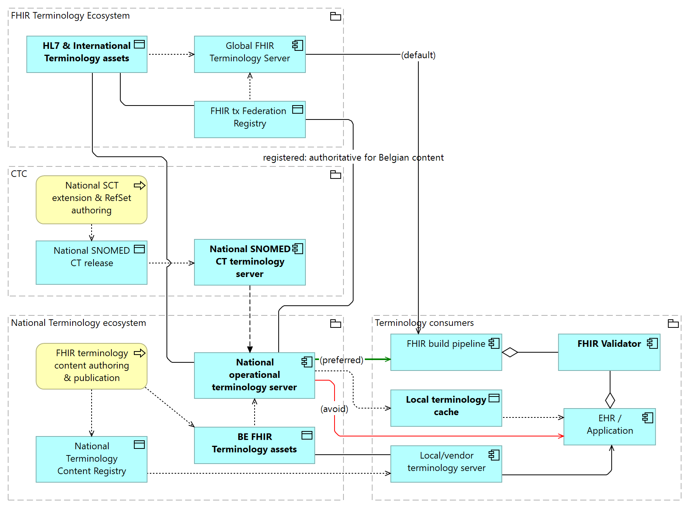

HL7 Belgium terminology Implementation Guide (IG)
1.0.0 - STU1

HL7 Belgium terminology Implementation Guide (IG)
1.0.0 - STU1

HL7 Belgium terminology Implementation Guide (IG), published by eHealth Platform. This guide is not an authorized publication; it is the continuous build for version 1.0.0 built by the FHIR (HL7® FHIR® Standard) CI Build. This version is based on the current content of https://github.com/hl7-be/terminology/tree/architecture and changes regularly. See the Directory of published versions
This page is informative. It specifies the components of the terminology architecture, their roles, the content each is authoritative for, and the interfaces between them. It defines no conformance requirements.

| Domain | Component | Type | Role |
|---|---|---|---|
| FHIR terminology ecosystem | HL7 & International terminology assets | Content | International CodeSystems, ValueSets and ConceptMaps |
| FHIR terminology ecosystem | FHIR tx federation registry | Registry | Records which server is authoritative for which CodeSystem and ValueSet |
| FHIR terminology ecosystem | Global FHIR terminology server | Service | tx.fhir.org; default terminology service for FHIR tooling |
| CTC | National SCT extension & RefSet authoring | Process | Authoring and maintenance of the national extension and national refsets |
| CTC | National SNOMED CT release | Content | RF2 release of the national extension and refsets |
| CTC | National SNOMED CT terminology server | Service | Ontoserver; distribution of the national SNOMED CT release |
| National terminology ecosystem | FHIR terminology content authoring & publication | Process | Authoring of FHIR terminology in Implementation Guides / packages |
| National terminology ecosystem | National terminology content registry | Registry | Index of nationally governed terminology content |
| National terminology ecosystem | BE FHIR terminology assets | Content | ValueSets, ConceptMaps and CodeSystem fragments published in IG packages |
| National terminology ecosystem | National operational terminology server | Service | FHIR terminology service for runtime use |
| Consumers | FHIR build pipeline | Consumer | IG publication; resolves terminology at build time |
| Consumers | FHIR validator | Consumer | Terminology validation, embedded in build pipeline and applications |
| Consumers | Local terminology cache | Consumer | Pre-computed expansions for offline use |
| Consumers | Local/vendor terminology server | Consumer | Local proxy or vendor terminology service |
| Consumers | EHR / application | Consumer | Clinical system consuming terminology at runtime |
Distribution of SNOMED CT content, national operational terminology services and local consultation are separate concerns, served by separate components.
| National SNOMED CT terminology server | National operational terminology server | Local/vendor terminology server | |
|---|---|---|---|
| Purpose | Distribution | Operational terminology service | Local consultation |
| Product | Ontoserver | — | Vendor- or deployment-specific |
| Primary interface | RF2 syndication feed | FHIR terminology API | FHIR terminology API |
| Operations | — | $expand, $validate-code, $lookup, $translate |
$expand, $validate-code, $lookup, $translate |
| Authentication | Required | — | Deployment-specific |
| Runtime use by applications | Not intended | Allowed | Preferred |
The SNOMED CT distribution server exposes a FHIR terminology API. That API is outside this architecture and is not to be used for operational calls.
Content of the national operational terminology server is assembled from three sources:
The national operational terminology server is a federated member of the tx.fhir.org ecosystem, not a fallback for it. Both servers realise the same logical FHIR terminology service.
Consequence for implementers: a validator or IG build points at the federated ecosystem. Nationally governed content resolves to the national server, all other content resolves as it otherwise would. No per-artefact choice of server is required.
| Content | Authored in | Distributed as | Lifecycle |
|---|---|---|---|
| ValueSet, ConceptMap, CodeSystem fragment | Implementation Guide | FHIR resources in the IG package | IG versioning and ballot |
| SNOMED CT refset | Ontoserver | RF2 | SNOMED tooling and release cycles |
| National SNOMED CT extension | Ontoserver | RF2 | SNOMED tooling and release cycles |
A ValueSet in an IG may reference a refset. The refset itself is not maintained in the IG.
A deployment may combine any of the following.
| Channel | Content | Notes |
|---|---|---|
| FHIR packages | Terminology published in IG packages | Resolved through normal package distribution |
| RF2 syndication | National refsets and extension | Authenticated; from the national SNOMED CT server |
| Terminology cache files | Pre-computed expansions | For offline and reproducible builds |
| Live terminology service | All content | Direct calls to the federated FHIR terminology API |
The choice of channel is operational. It affects freshness, licensing obligations and build reproducibility, not the semantics of the content.
A local terminology proxy holds a manifest of the content it requires and a cache of what it has resolved, so that routine validation does not depend on network availability.
| Consumer | Route | Status |
|---|---|---|
| FHIR build pipeline | Global FHIR terminology server | Default |
| FHIR build pipeline | National operational terminology server | Preferred |
| EHR / application | National operational terminology server, called directly | To be avoided |
| EHR / application | Local/vendor terminology server, or local terminology cache | Preferred |
IG © 2021+ eHealth Platform.
Package hl7.fhir.be.terminology#1.0.0 based on FHIR 4.0.1.
Generated
2026-08-13
Links: Table of Contents |
QA Report |
Version History |